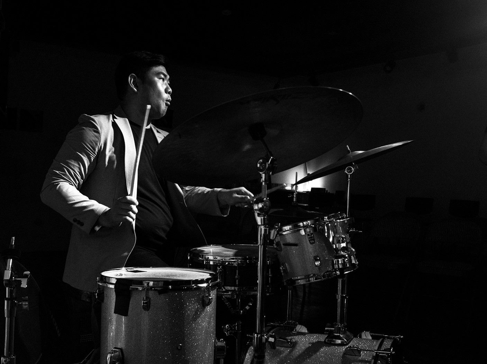
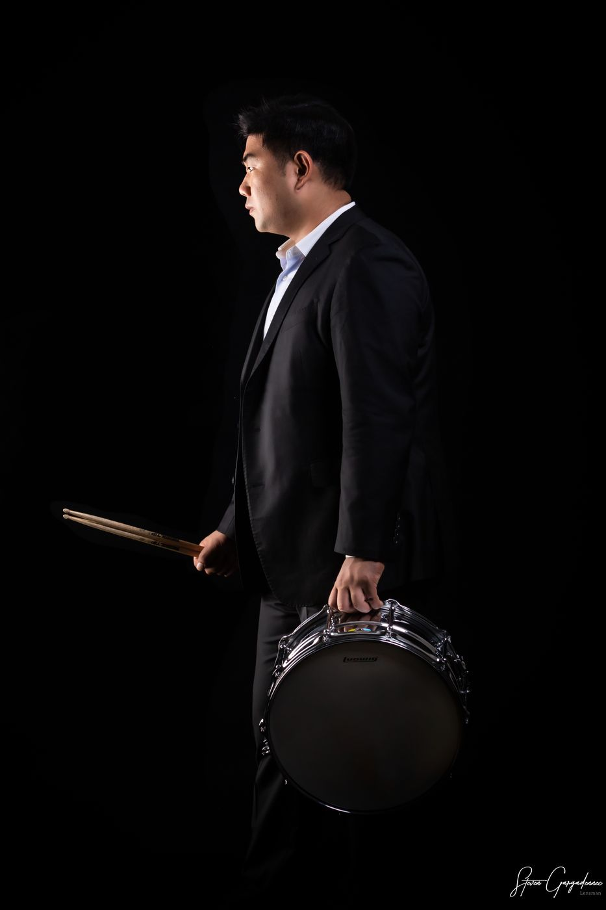

My story
Twenty years of
playing what I hear.
The long version. How a kid from Daejeon who did not like jazz ended up believing in it like a religion, and what the people on the way taught me.

Play what you hearI didn't like jazz.
I was born in Daejeon. I started on piano at five, tried clarinet and trumpet, and switched to drums the day I saw a drummer on television. My mother found me a teacher, and that was that.
At Kyunghee University, in the department that housed the jazz programme, I played everything except jazz. Musical theatre pits, reading charts. Orchestral percussion. Pop records and tours. Television bands, playing behind singers. Funk, whatever came. Jazz sounded difficult, I could not tell what was going on, and I could not find the fun in it. I did not love music yet. I loved the drums.
A beer and one tune.
When I came back from military service, a German bassist named Martin Zenker had joined the faculty. I could not speak a word of English, but I could feel that he was teaching from the heart. He told every student the same thing: come to the club when I play, I will buy the beer. So I went. The music was loud and alive, and it was the first time in my life I had hung out with foreigners. Then the host did what hosts do at a jazz club: he called me up to play one tune. I was lost. I just played. And somewhere in there I heard the fun.
I did not know the tunes. When the musicians called a title I could not even catch the English, so I went to the bathroom and wrote it down phonetically in Korean, then looked it up at home. The first one was "Misty". I could not have spelled M-I-S-T-Y. I was ashamed of not knowing. Looking back, I was a baby. It was 2006.
Play what you hear.
Zenker booked a Korean tour with the New York saxophonist Jesse Davis and put me on drums. I did not know who Jesse Davis was. I trusted Martin. At the airport the airline lost Jesse's bags, he chain-smoked outside the terminal, and I nervously bought him a Coke. He drank it in one go and said: anyway, let's go.
The next day was EBS Space, a televised concert. The producers asked for a set list. Jesse said he did not know what he was going to play. Five minutes before we went on I was holding charts, asking about the groove and the tempo, and he kept saying the same thing.
You don't understand. Just play what you hear. Relax. Play what you hear.
Then he played, and it was a sound I had never heard. Warm, filling the hall without a microphone, never sharp. Phrases that went straight into the chest. That night he pulled out a tune he had not played in years, a prayer for his daughter, and people in the audience cried. My job became clear: his direction was so clear that all I had to do was support it. I disappeared into it. Halfway through he introduced "our great young drummer, Minchan Kim", waved me into a solo, and came back in at exactly the moment I wanted him to. We had never played together before.
That concert was released on the German label Nagel Heyer as Soul Searchin': Live in Seoul. In the years after, Jesse, Martin and I toured Europe together. Years later, after a show in Europe, Jesse walked up to me and asked where I had learned to play like that. I did not know what he meant. Now I think I do: it was naturalness.
Jesse told me over and over that I had something special in my music. It took me ten years to believe it myself.
New York: jazz is not a genre.
I had played jazz for a long time, but I really understood it in New York. Jesse never gave information. He disliked being asked for it. But he respected the sound of someone who knew nothing, all the way down. What he kept telling me to come to New York for, I only understood once I was there: jazz is not a by-product of knowledge or a genre. It is Black culture itself, and you understand the source of this art only by understanding the culture. The world has turned jazz into a business with systematic education, play this here, practice it like that, and the information is all correct, and it is not how the music is actually played. People try to build the knowledge first. The order is backwards.
Playing with musicians there, the strangest thing was that nobody gave orders. No one explains how to play. You wait until the natural flow creates the change. A band is like a magnet: once a direction fires, everyone gets pulled in. Feedback comes only when the direction is wrong. The rest is complete freedom. If a leader imagines a Latin tune and the drummer hears it as funk, the answer is "I like it. If my melody sounds like that rhythm to you, then that's what you made." The pianist is not a drum expert, so the drums are the drummer's. Underneath all of it is a deep respect for how another person feels. Everyone's favourite colour is different, but the tools of the game are the same.
Nights at Smalls and Mezzrow. And one afternoon in Central Park when fifty, seventy, a hundred strangers started dancing to what we were playing. Warm, full, alive. I still go back to that feeling.
Germany: take what I don't have.
When the pandemic stopped everything, an old friend in Europe called: you can't do anything anyway, come do a master's here and play. Tuition was free, he handled the paperwork, and I got on a plane. I spent the better part of three years in and out of southern Bavaria. Germany was more rigid than I expected, in daily life and in music, and honestly it was frustrating.
My professor was Austrian, with a serious European career. In jazz, I could hear right away that he was not ahead of me. But in pop and Latin he was far ahead. So I changed my thinking: fine, then I want what you have that I don't. I asked him about everything he had, he enjoyed being able to give it, and we ended up respecting each other and became friends. We still talk. That is still how I learn, and how I teach.
We play magic tonight.
When every player fully respects and fully listens, something happens that musicians in New York just call magic. It does not come every night. A professional keeps a level regardless of the room: a bad instrument, a bad sound system, rain at an outdoor festival. Magic can still happen.
The night I remember most was my first show back after two years away from touring. Second set, first tune, under a pin spot, not even sure I could trust my own hands. When it locked in, the audience stood up. You can feel the difference between real applause and polite applause from the stage. That is the circulation of love: the musician sends energy out, it warms something in the listener's chest, it comes back up to the stage, and the musician amplifies it and sends it out again. That is the power of real music. A friend in Mongolia decided to become a jazz musician after his first concert. A chef friend told me he got through his hardest season on that music. People write the next day because it has not worn off.
The one condition for magic is believing in yourself first. If I don't believe in me, nobody else can, even if they want to.
Now.
I split my time between Seoul and New York. I lead my own projects, write music between tours, teach, and play as a sideman when the music is right. Two words I keep coming back to, on stage and off: straightforward and harmony. Say what you mean, and keep the room in tune. Everything I am building now, the new recordings, the book for people who have never heard jazz, this website, comes from one idea: I play for the people in the room, and the people are already waiting.


